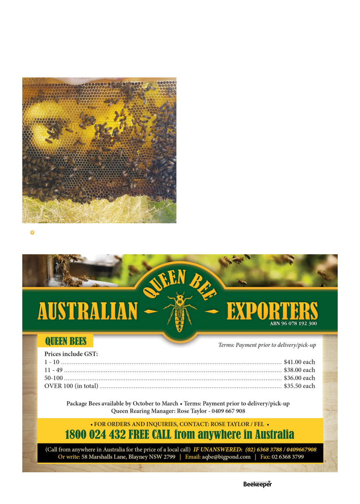

References
1.
Taha, E.-K. A., & Al-Kahtani, S. N. (2020). The relationship
between comb age and performance of honey bee colonies.
Saudi Journal of Biological Sciences, 27(1), 30–34. https://doi.
org/10.1016/j.sjbs.2019.04.005
2. Taha, E.-K. A., Rakha, O. M., Elnabawy, S. M.,
Hassan, M. M., & Shawer, D. M. B. (2021). Combage
significantly influences the productivity of the honey bee
(Apis mellifera) colony. Journal of King Saud University
- Science, 33(4), 101436. https://doi.org/10.1016/j.
jksus.2021.101436
3. Shawer, M. B., Elnabawy, E. M., Mousa, K. M., Gaber,
S., & Ueno, T. (2020). Impact of different comb age on
morphological and biological characteristics of honey
bee workers (Apis mellifera L.Journal of the Faculty of
Agriculture, Kyushu University, 65(2), 277–282.) https://
doi.org/10.5109/4103891
4. Taha, E.-K.A. et al. (2024) ‘Comb age significantly
influences the emergency queen rearing, morphometric
and reproductive characteristics of the Queens’, Journal
of Apicultural Research, pp.1–8. doi:10.1080/0021883
9.2024.2336376.
“Calico” comb partially deconstructed by wax moths and
rebuilt by bees
elves I assume. Repeat this process until the entire core of
the comb has been removed by the wax moth larvae but
the outer edges all remain (generally they conveniently do
it this way). Don’t just leave them for a long time though
or they’ll thoroughly turn all the comb to webbing, damage
the frames with their cocoons (which always bore half into
wood) and will have had enough completing the pupation
cycle to potentially be a nuisance to others. Done right
though, the resultant comb will have swirls of dark chocolate
brown whirled with the golden french vanilla coloured brand
new comb like an ice cream of buzzing bees, or, perhaps, like
a purring calico cat.
Vol. 126 | No. 01 |
Celebrating 125 years | 19